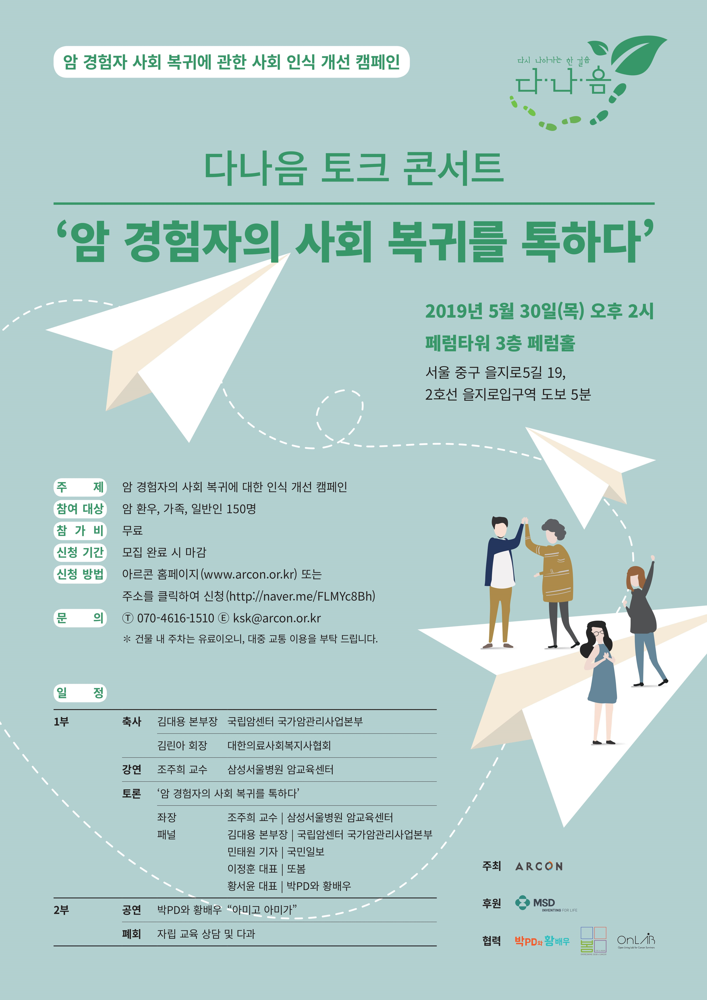

PROGRAMS
또봄의 활동
배우고, 떠나고, 이야기하며 — 청년의 봄을 다시 피웁니다.

앎 캠페인 — 여행 버킷 챌린지

“다 나으면, 여기 가고 싶어요.”
그 약속을 함께 지킵니다.
투병 중인 청년이 완치 후 가고 싶은 여행지를 남기면, 치료를 이겨낸 뒤 그 길에 또봄이 동행합니다. 여정은 포토북과 영상으로 남겨, 세상에 “나을 수 있다”를 전합니다.
Cheer UP 곧, 봄

이야기하고, 노래하고, 같이 웁니다.
암 경험자의 솔직한 이야기를 나누는 토크 · 싱 콘서트. 경험자와 비경험자가 한자리에서 웃고 울며, 편견은 자연스럽게 허물어집니다.